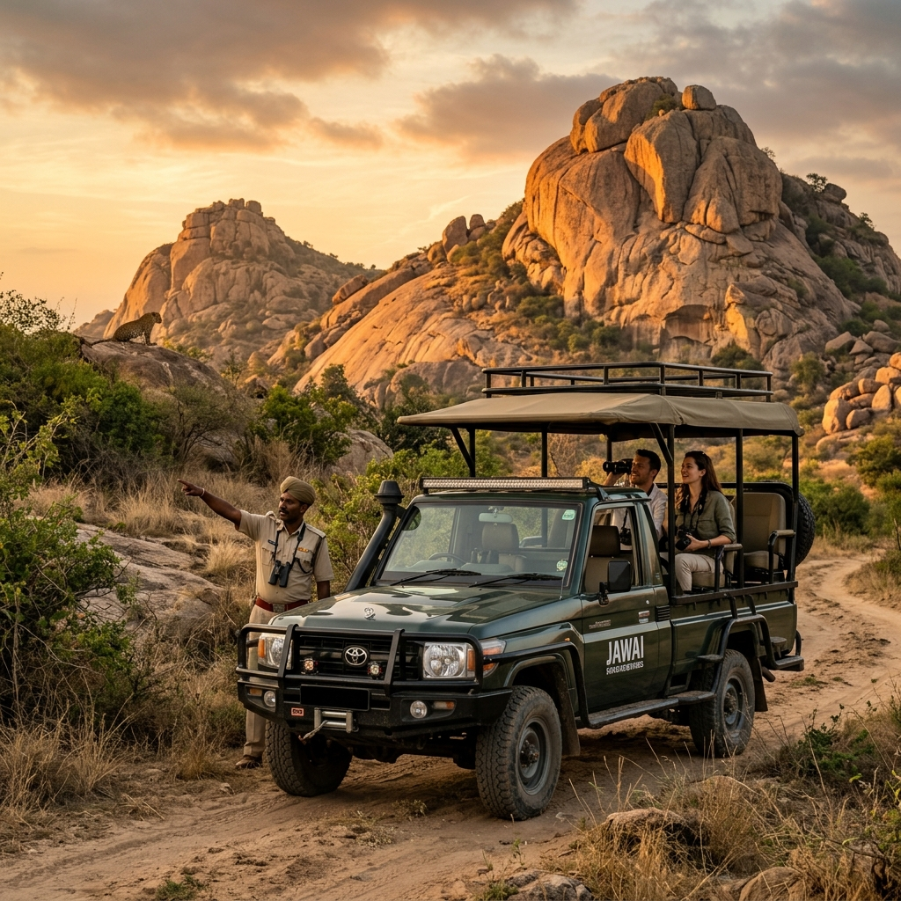

Private Jawai Leopard Safari & Tracking
Embark on an exclusive private safari excursion in customized 4x4 open jeeps. Guided by Jawai's most experienced naturalists, track the legendary rock leopards with a 95% sighting success rate.

95% Sighting
Success Rate
Track wild predators across billions-of-years-old granite kopjes.
Jawai's unique landscape is unlike any other wildlife sanctuary in India. Here, wild leopards (Panthera pardus fusca) live among billions-of-years-old granite rock formations, creating a dramatic backdrop for wildlife tracking. Over decades, these leopards have adapted to the presence of local Rabari herdsmen and conservationists, allowing for extraordinarily close and non-intrusive sightings.
At Leopard Trails Jawai, we provide a completely private safari model. You will travel in custom-designed open 4x4 Gypsy vehicles specifically modified for wildlife photography, offering high-clearance, sand-colored canvas frames, and cushioned individual seating.
Expert Naturalist & Trackers
Every safari is accompanied by a dedicated naturalist who understands the tracks, alarm calls, and behaviors of resident leopards.
Hyper-Exclusive Vehicle Access
We limit our safaris to only three jeeps per zone, ensuring an intimate, quiet, and highly respectful observation.
The Daily Chronicle of a Safari Day
Morning Dawn Tracking (05:30 AM - 08:30 AM)
As the first light illuminates the ancient granite hills, the valley comes alive. Leopards are nocturnal hunters, often active during the twilight hours. We depart the outpost as the desert air is cool, scanning the peaks of the rocks where leopards frequently rest to soak up the morning sun. After the tracking session, enjoy a signature gourmet bush picnic breakfast with fresh french-press coffee, local seasonal fruits, and warm baked goods set up on a scenic granite ledge.
Late Afternoon Exploration & Sundowner (04:00 PM - 07:00 PM)
The afternoon safari focuses on active tracking as leopards descend from their cave shelters to find water and patrol territory. We drive through the scrub forests, ancient sand beds, and grasslands surrounding the Jawai Bandh reservoir, which is also home to mugger crocodiles and migratory birds. As dusk falls, our drivers park the jeep at a high ridge view point where a private mobile sundowner bar serves chilled champagne, craft cocktails, and hot canapés while the sunset paints the sky.
A Commitment to Wildlife Conservation
At Leopard Trails, our safaris are conducted with the highest ethical standards. We strictly maintain a safe distance from leopards, do not use artificial spotlights, and never pursue a leopard if it indicates discomfort. A portion of every safari booking fee directly funds local tracking efforts, veterinary checkups, and compensation funds for local shepherds in case of livestock losses.
Safari FAQ
What is the best season to spot leopards in Jawai?
Leopards can be spotted year-round due to the stable cave systems in the granite rocks. However, the dry winter months (October to March) offer the most pleasant weather for safaris. The summer months (April to June) are excellent for tracking as leopards frequently visit waterbeds.
Are the safari zones shared with other tourists?
Jawai is not a national park run by the government; it is a community reserve. This allows us to access private tracks and avoid the heavy vehicle congestion seen in national parks like Ranthambore. Your jeep will be completely private, occupied only by you and our expert naturalist.
Is it safe to go on a safari in open jeeps?
Yes, leopards in Jawai have grown up seeing open vehicles and Rabari herdsmen for generations and do not perceive the vehicle as a threat. Our master naturalists are highly trained in wildlife behavior and follow strict safety guidelines to ensure a completely safe experience.
What camera gear is recommended for leopard photography?
Leopards are often perched on granite cliffs, so a telephoto zoom lens (minimum 300mm to 600mm) is highly recommended. A wide-angle lens (24-70mm) is also useful for capturing the spectacular granite landscape and sunset tracks.
Ready to Track the Lord of the Kopjes?
Reserve your private sanctuary at Leopard Trails and customize your safari itinerary with our head concierge team today.
Reserve Your Safari Stay